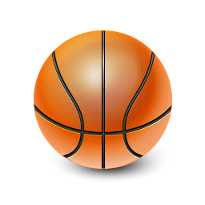

Basketball
Players & Equipment
Each team is made up of 12 players with only 5 allowed on the court at any time. Each player will then take up a position on the court but are allowed to move around as they please.
Scoring
There are three scoring numbers for basketball players. Any basket scored from outside the three point arc will result in three points being scored. Baskets scored within the three point arc will result in two points being scored. Successful free throws will result in 1 point being scored per free throw. The number of free throws will depend on where the foul was committed.
Rules of Basketball
- At the main menu, choose a sport and difficulty. (Easy: Only multiple choice, no time limit. Intermediate: Multiple choice and fill in the blank, 12 second time limit. Hard: Multiple choice and fill in the blank, 8 second time limit) Once you¡¯re ready, click Start.
- The ball can only be moved by either dribbling (bouncing the ball) or passing the ball. Once a player puts two hands on the ball (not including catching the ball) they cannot then dribble or move with the ball and the ball must be passed or shot.
- After the ball goes into a team¡¯s half and they win possession back the ball must then make it back over the half way line within 10 seconds. If the ball fails to do so then a foul will be called and the ball will be turned over.
- Each team has 24 seconds to at least shot at the basket. A shot constitutes either going in the basket or hitting the rim of the basket. If after the shot is taken and the ball fails to go in the basket then the shot clock is restarted for another 24 seconds.
- After each successful basket the ball is then turned over to the opposition.
- Violations in basketball include travelling (taking more than one step without bouncing the ball), double dribble (picking the ball up dribbling, stopping then dribbling again with two hands), goaltending (a defensive player interferes with the ball travelling downwards towards the basket) and back court violation (once the ball passes the half way line the offensive team cannot take the ball back over the half way line).